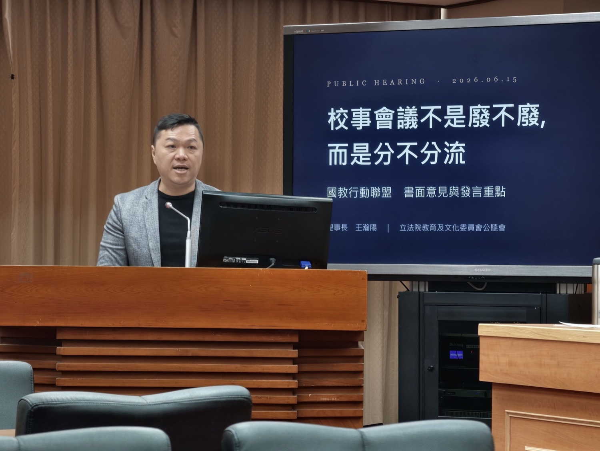
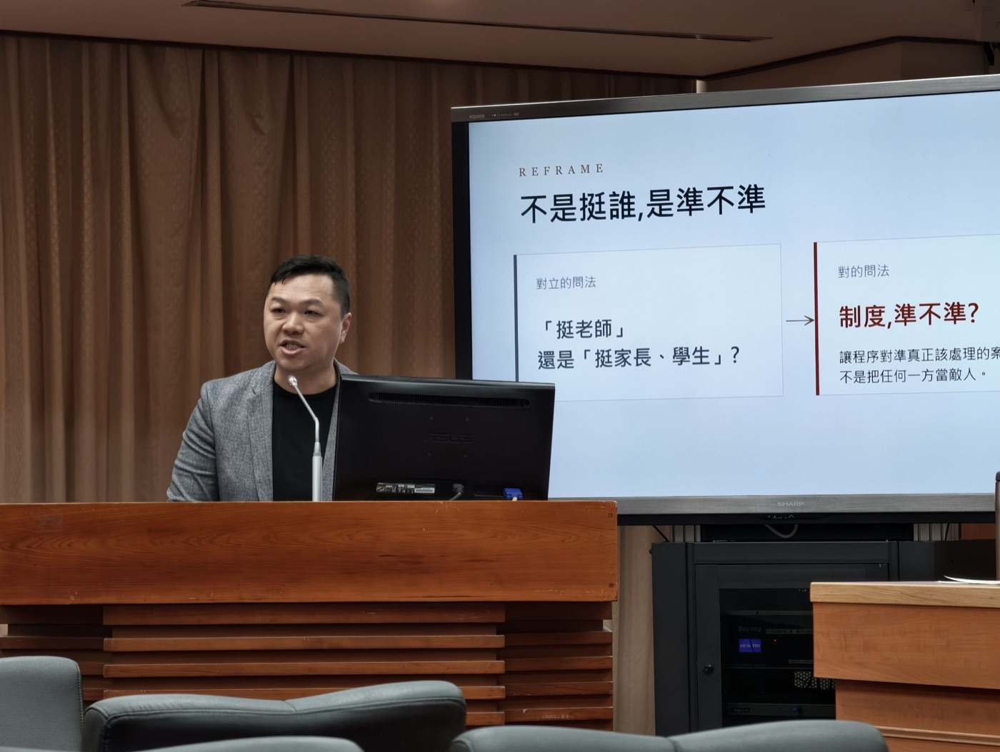
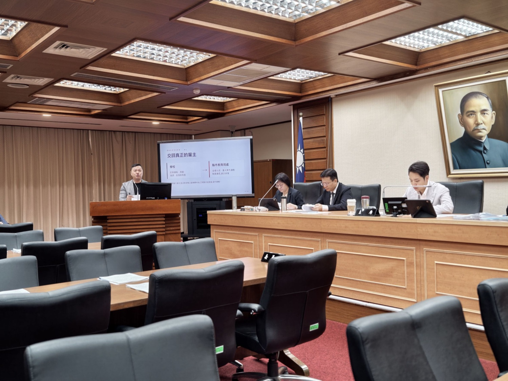
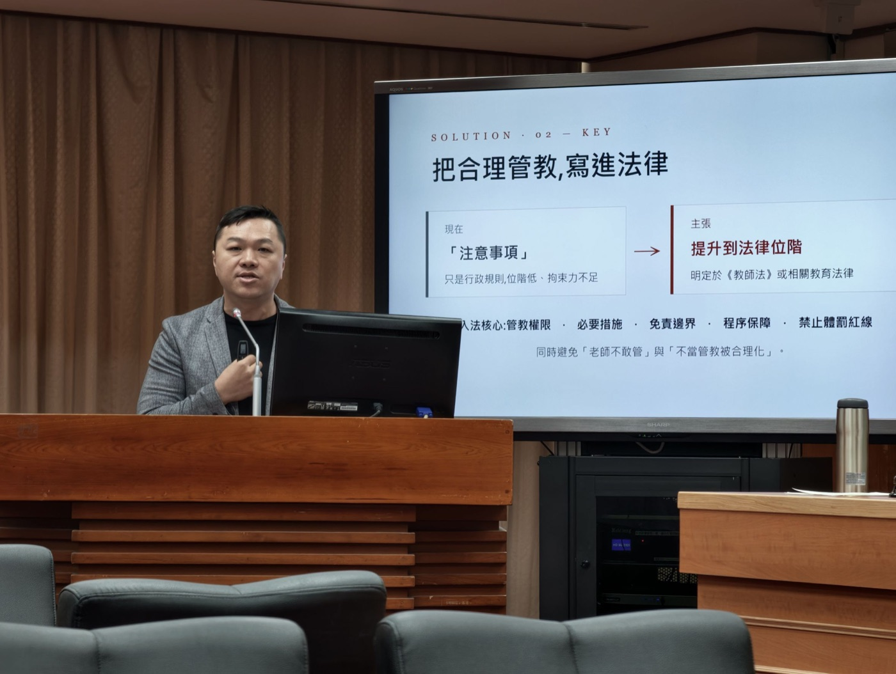
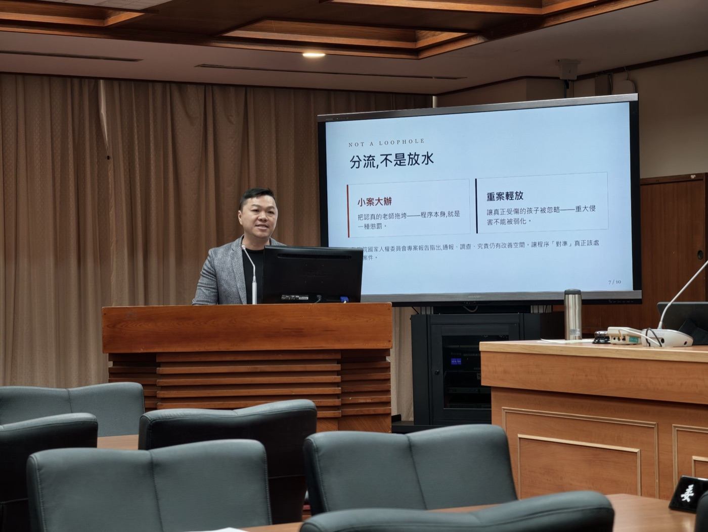

校事會議不是廢不廢，而是分不分流
國教盟籲案件上移教育局處、合理輔導管教提升法律位階——小案不大辦、重案不輕放，老師才敢管，孩子才被接住。

立法院教育及文化委員會今（15）日召開《高級中等以下學校教師解聘不續聘停聘或資遣辦法》及《公立高級中等以下學校教師成績考核辦法》公聽會。國教行動聯盟（簡稱國教盟）提出書面意見，主張校事會議不應廢除，但必須真正分流：重大不適任與師對生暴力案件要查到底；日常親師溝通、教學風格差異、未涉體罰或重大侵害的管教爭議，不應一開始就被推進最嚴格的調查程序。
這不是「挺老師」或「挺家長學生」的對立，而是制度要不要精準。好的制度應同時做到四件事：老師敢於合理管教，孩子免於不當對待，正當申訴有可預期程序，重大案件不被輕放。
—— 國教行動聯盟 理事長 王瀚陽

教育部近日對外說明，新制上路後，115 年 1 至 4 月教師投訴案件為 202 件，較 114 年同期 448 件下降；進入校事會議調查案件為 45 件、占 22%，也較前一年同期 366 件、占 82% 明顯下降。國教盟肯認這代表「大小案分流」方向正確；但四個月數字仍屬短期觀察，教育部應公布完整統計口徑，並常態公開受理率、分流率、案件類型、處理時間與結果，讓制度成效接受社會檢驗。
國教盟理事長王瀚陽指出，現制最大問題，是把第一線學校推到裁判位置。學校要面對家長，也要面對同仁；處理重了被質疑偏向家長，處理輕了被質疑偏向教師，最後兩邊都難以信服。教師解聘、不續聘、停聘等重大處分，依法仍須報主管機關核准；因此，學校應回到通報、溝通、協調與支持角色，受理分流、重大案件調查與制度責任，則應逐步由縣市教育局處承接。

國教盟也提醒，分流不是放水，更不是包庇。監察院國家人權委員會已針對校園師對生暴力處理機制提出專案報告，指出通報、受理、調查、究責與後續輔導增能仍有改善空間。換言之，制度同時存在「小案大辦」與「重案輕放」風險；改革方向不是廢掉程序，而是讓程序對準真正需要處理的案件。
國教盟四項訴求

我們從不主張廢除校事會議，真正重大案件仍然需要它；我們要的是分流。老師敢管，不等於可以體罰；孩子被保護，也不等於所有管教都被視為傷害。不要更兇，也不要更鬆，我們要準——小案不大辦、重案不輕放，老師才敢管，孩子才被接住。
—— 國教行動聯盟 理事長 王瀚陽

國教盟呼籲，教育部應在半年檢視時程內提出具體改革路線圖，把分流成效制度化；立法院也應推動分流層級法制化、名譽回復機制與合理輔導管教入法，讓校園事件處理回到可預期、可信任、可承擔的制度軌道。
常見問題
Q1：國教盟主張廢除校事會議嗎？
不主張。國教盟主張校事會議不應廢除，但必須真正分流：重大不適任與師對生暴力案件要查到底；日常親師溝通、教學風格差異、未涉體罰或重大侵害的管教爭議，不應一開始就被推進最嚴格的調查程序。
Q2：教育部公布的新制數據是什麼？
教育部說明，新制上路後 115 年 1 至 4 月教師投訴案件 202 件（較 114 年同期 448 件下降）；進入校事會議調查 45 件、占 22%（較前一年同期 366 件、占 82% 明顯下降）。國教盟肯認分流方向正確，但四個月仍屬短期觀察，籲常態公開受理率、分流率、案件類型、處理時間與結果。
Q3：國教盟提出哪四項訴求？
一、分流制度明確化（公布受理分流檢核表、建立常態統計、編製操作手冊）；二、辦法儘速修正（受理分流逐步交由縣市教育局處、檢舉來源分流規則）；三、合理輔導管教提升到法律位階（明定於教師法或相關教育法律）；四、法律層級接續改革（程序終結效力、名譽回復機制、教師受暴支持、安全港入法）。
Q4：為什麼要把案件處理層級上移到教育局處？
教師解聘、不續聘、停聘等重大處分依法仍須報主管機關核准，第一線學校並非實質雇主卻被推到裁判位置，處理重了被質疑偏向家長、輕了被質疑偏向教師。學校應回到通報、溝通、協調與支持角色，受理分流與重大案件調查逐步由縣市教育局處承接。
新聞聯絡人
國教行動聯盟 理事長 王瀚陽 0983-097-165
完整書面意見（六題綱逐一回應＋15 項建議＋國際借鏡）：校事會議該廢除嗎？國教盟立法院公聽會完整書面意見
制度背景（中立事實整理）：校事會議知識專頁——定義、流程、修法沿革、爭議數據。